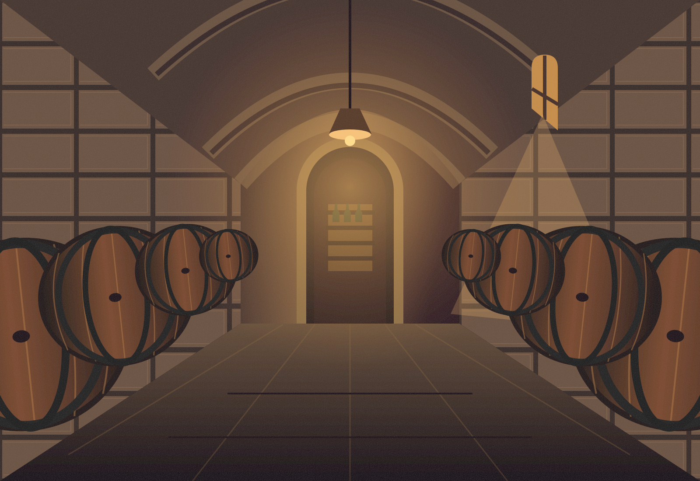

Chenin Blanc
White · quince · chalk · quiet energy
£9 / glass
NATURAL WINE. SMALL PLATES. SOHO.
A curated list of natural and artisan wines from small producers.
No rush. No noise. Just great wine.
THE LIST BY REGION
Rooted in place.
Chosen with feeling.
The classics and the unknowns. Explore mineral Loire whites and elegant Burgundy reds. Ask about the evening's open bottles.
Coastal whites from Liguria, textured orange wines and volcanic reds. A changing selection of small, independent growers.
From Atlantic freshness to the warmth of Aragón. Discover lighter reds and saline whites in the sample list below.
Adventurous producers beyond the familiar. Georgia is included here under the brief's grouping, with its own ancient winemaking heritage.
4 sample pours
White · quince · chalk · quiet energy
£9 / glassOrange · apricot · tea · gentle grip
£9 / glassRed · cherry · herbs · lifted spice
£8 / glassRed · plum · pepper · generous depth
£10 / glassNo pours match. Try another word or choose all styles.
Illustrative pours and prices. The complete rotating list and stock are not connected.
CHEESE & BOARDS
Our cheese selection changes with the season. Two affineurs in France. One in Somerset. Every board assembled to order.
Board from £18Add a pairing flight for £12 more.
Different from our standalone flights below.
WINE FLIGHTS
A themed journey through a region, grape or style you may not have tried. Chosen nightly by our sommelier.
Burgundy, Rioja and Barossa in sequence. Three celebrated regions. A masterclass in structure and place.
Three exceptional bottles, opened when the table is ready. Ask the team what's pouring tonight.
Choose a flight to add it to your table preview.
A ROOM OF YOUR OWN
Our basement seats twelve. The list travels with the meal.
For celebrations, wine dinners, and evenings worth making an occasion of.
“The most thoughtful wine list in the neighbourhood. There is not a single wine on it I wouldn't order.”— JAMES T. · ILLUSTRATIVE BRIEF TESTIMONIAL
YOUR EVENING STARTS HERE
Mon–Wed 4pm–midnight
Thu–Sat 3pm–1am · Sun 2pm–10pm
No deposit for parties under 6 in the brief.
This is a local reservation preview, not a live reservation.